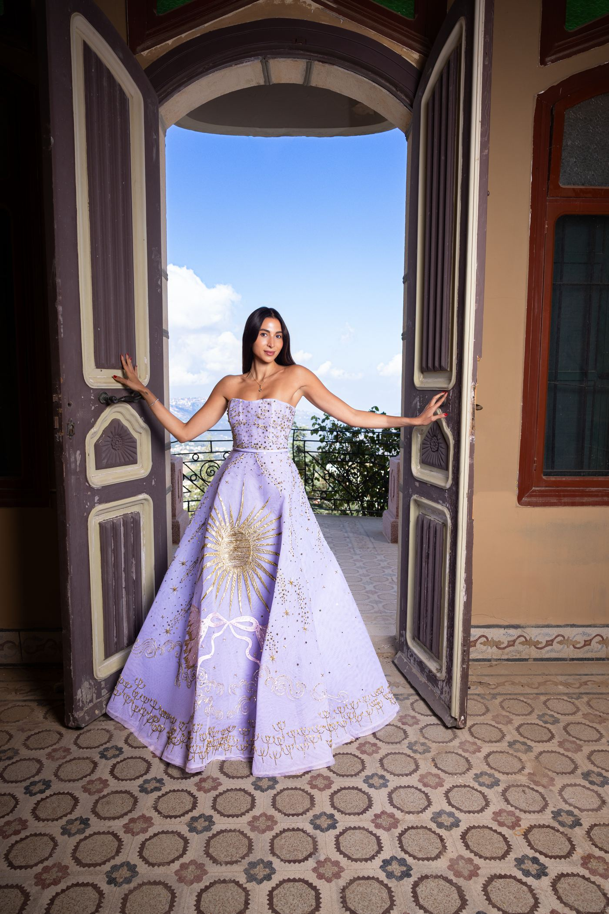

Farah Dagher
Farah Dagher, co-founder of Origin Circle, Beirut's social wellness club. Having studied and built part of her professional life in New York, Farah chose to return to Lebanon and create a space where wellness and community could come together. Rather than waiting for that space to exist, she built it herself.
Starting something new in Beirut requires resilience and a genuine belief in the community one hopes to serve. Farah represents women who do more than return to the city; they actively contribute to its next chapter.
During our Banet Beirut shoot, what stood out was her effortless elegance with which she carried herself.
For the editorial, Farah wears couture by Sara Mrad, whose designs bring a modern fairytale sensibility to Lebanese couture. The photographs were captured by Moucho Tashjian.